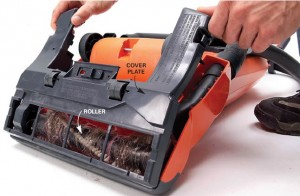

All Latest News
Members
We have a new member
Doe spent 10 years working as the lead sales representative for the Vaccum Cleaner. and 10 years running the sales program at the 123 Co. During that time he helped launch five major national sales campaigns, trained dozens of junior sales staff members and raised the bar for sales performance. He is always a bright spirit, and he is in a mood for socializing. He's 35 years old and his hobby is hunting. In his free time he is working on his new project that will delight the world.He also trains regularly and promotes healthy life.
We have a new member
Michael is the founder of this company. At the age of 12, he wanted to have his own company and succeeded in doing so. Successfully engaged in business and sales for 10 years. In his free time he helps build children's playgrounds around the world.
We have a new member
 Mike is an expert in fixing things. He graduated from mechanical engineering and now works as our engineer. Responsibly considers his job and always completes it in the fastest
possible time.He is always a bright spirit, and he is in a mood for socializing. He's 35 years old and his hobby is hunting. In his free time he is working on his new project that will delight the world.He also trains regularly
and promotes healthy life.
Mike is an expert in fixing things. He graduated from mechanical engineering and now works as our engineer. Responsibly considers his job and always completes it in the fastest
possible time.He is always a bright spirit, and he is in a mood for socializing. He's 35 years old and his hobby is hunting. In his free time he is working on his new project that will delight the world.He also trains regularly
and promotes healthy life.
Products
Auto cleaner
The VR200’s powerful suction ensures a deep and thorough clean on every surface. Parquet, tiles, carpet – you name it and the VR200 can clean it. Its effective suction power is up to three times more effective than comparable products.The VR200 uses innovative, circular brushes that rotate 30 times per second to remove dirt particles, ensuring optimum cleaning on all floors, along edges and in corners.Using built in sensors, the VR200 can quickly detect furniture and obstacles in its path and manoeuvre easily around them. It can also overcome door thresholds and avoid stairs like a breeze. Using intelligent, ultrasonic sensors, the VR200 travels precisely along skirting boards, walls and edges. Its unique D-shape means it can easily reach all corners.Thanks to a height of just 9cm, the VR200 is able to get right underneath your furniture, meaning no dirt is missed!
Vacuum cleaner
 Time to write history: The Kobold VK200 in combination with the Kobold EB400 offers fully automatic floor detection. Ultrasonic Sensors detect all floor conditions and automatically
adjusts right performance power to the floor setting. Whether it’s hard floors or carpets – the VK200 Cleaning System has it covered.Outstanding cleaning results with low energy consumption, regardless of whether you are cleaning
carpets, parquet or tiles. This has enabled the VK200 with EB400 automatic electric brush attachment to achieve top A+ classification in Energy Efficiency category.The excellent ergonomic design with its easily adjustable telescopic
handle, lightweight construction and Swivel/Pivot joint, make the Kobold VK200 an extremely manoeuvrable upright vacuum cleaner, and allows for a back-friendly posture. Conveniently located on the handle grip, the main power switch
is right where you need it to be. It has never been easier to change filter bags: open the flap, insert the new filter bag. Done! Once the device is switched on, the new Kobold FP200 3 in 1 Premium Filter bag unfolds itself automatically.
But that’s not all: The Kobold FP200 improves air quality for people with allergies.
Time to write history: The Kobold VK200 in combination with the Kobold EB400 offers fully automatic floor detection. Ultrasonic Sensors detect all floor conditions and automatically
adjusts right performance power to the floor setting. Whether it’s hard floors or carpets – the VK200 Cleaning System has it covered.Outstanding cleaning results with low energy consumption, regardless of whether you are cleaning
carpets, parquet or tiles. This has enabled the VK200 with EB400 automatic electric brush attachment to achieve top A+ classification in Energy Efficiency category.The excellent ergonomic design with its easily adjustable telescopic
handle, lightweight construction and Swivel/Pivot joint, make the Kobold VK200 an extremely manoeuvrable upright vacuum cleaner, and allows for a back-friendly posture. Conveniently located on the handle grip, the main power switch
is right where you need it to be. It has never been easier to change filter bags: open the flap, insert the new filter bag. Done! Once the device is switched on, the new Kobold FP200 3 in 1 Premium Filter bag unfolds itself automatically.
But that’s not all: The Kobold FP200 improves air quality for people with allergies.
Services
Auto cleaner service
If you need to get your vacuum repaired, please bring it in to your local Vacuum Cleaner store and they will be able to organise this for you. Vacuum Cleaner is committed to providing the highest quality repair service. Our qualified staff do not compromise on machine performance; we aim to work to the manufacturer’s specifications, and use new parts. We also offer a 90 day back-to-store warranty on all repairs for your peace of mind, which includes all parts and workmanship. This back-to-store warranty requires customers to return their product to a Vacuum Cleaner store for repair. Vacuum Cleaner repair centres are equipped with dedicated repair tools for our skilled staff to repair most makes and models to the manufacturers’ specifications. We strive to provide a 100% satisfaction guarantee and offer competitive pricing on all our vacuum repairs and services. If you are looking for a hard-to-find vacuum part, then you may need to contact our Vacuum Parts Expert here. He will be able to help you source vacuum parts from a huge range of manufacturers! To find your nearest Vacuum Cleaner store, please visit our footer and click on address.
Vacuum cleaner service
If you need to get your vacuum repaired, please bring it in to your local Vacuum Cleaner store and they will be able to organise this for you. Vacuum Cleaner is committed to providing the highest quality repair service. Our qualified staff do not compromise on machine performance; we aim to work to the manufacturer’s specifications, and use new parts. We also offer a 90 day back-to-store warranty on all repairs for your peace of mind, which includes all parts and workmanship. This back-to-store warranty requires customers to return their product to a Vacuum Cleaner store for repair. Vacuum Cleaner repair centres are equipped with dedicated repair tools for our skilled staff to repair most makes and models to the manufacturers’ specifications. We strive to provide a 100% satisfaction guarantee and offer competitive pricing on all our vacuum repairs and services. If you are looking for a hard-to-find vacuum part, then you may need to contact our Vacuum Parts Expert here. He will be able to help you source vacuum parts from a huge range of manufacturers! To find your nearest Vacuum Cleaner store, please visit our footer and click on address.